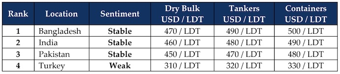

inWeekly Demolition Reports30/12/2024

As a year of turmoil & global economic tumult winds down on a quiet note as has historically been the case for the week between Christmas and New Year, the world silently turns its way to anticipating a 2025 that is bearing all the signs of a comparatively busier period across all sectors. For week 52 however, it was a different story as not only did global trade ease this week, but economies also took a breather against the raging U.S. Dollar as well, as most ship recycling nation currencies seemed to irrationally display the same amount of instability this week, resulting in a quieter port position in both India and Bangladesh. Moreover, and shockingly of all, despite apparently performing off the charts for a majority of the year, the Baltic Dry Exchange Dry Bulk Index slid so rapidly over Q4 2024, it recorded an overall 52.5% annual decline, the worst since 2014. Sectors such as Capesize index fell 66.7%, Panamax index fell 48.7%, and even Supramaxes saw a 32% decline across the year. While the wet sector continues to sprinkle its share of tonnage after quite a hiatus, the supply of recycling vessels heading into 2025 is certainly gearing up for a seeming uptick. The overall declining Baltic Exchange also saw oil prices relaxing around the USD 70.6 / barrel for the week as well, as non-OPEC+ countries are expected to drive up output despite the dithering Chinese demand, where China today is the largest importer of oil in the world.
2024 has also marked itself as a year of noteworthy transitions and development across international recycling markets, as a recognition to upgrade facilities and officiate the HKC in the respective Indian sub-continent ship recycling destinations highlights the willingness of these governments to undertake the business of ship recycling, in a broader and internationally accepted standards on safety and environmental safety and 2025 should hopefully see Pakistan and Bangladesh ramp up yard upgrades to HKC standards ahead of its entry into force from the middle of next year. Local steel plate prices have been through the worst of times falling over USD 150/Ton from the highs seen earlier in the year, until the close of this week where both Indian and Pakistani steel plate prices reported further declines whilst Bangladesh and China flatlined this week.
The Supply of tonnage has seen a year of record low recycling volumes, and yards are certainly yearning for busier days ahead, as freight markets increasingly start to divert more candidates for recycling, after a year of glorious charter rates across all sectors. Recycling prices have themselves seen significant declines over the course of the year, from a high of USD 600/LDT during Q1, right down to USD 450s/LDT come Q4 2025. This has kept most recycling yards suspended in a state of limbo as a permanent shut down would be far more expensive than a temporary operational closure, which several yards across the Indian sub-continent and even Turkey, have reported through the year. Political instability has been rife across the sub-continent, adding to the inability of these economies to stabilize enough and match their offers with the volatility of the U.S. Dollar. In India and Bangladesh, PM Modi failed to win the required majority during the India’s 2024 election and PM Sheikh Hasina fled Bangladesh after an insurrection that lead to an interim military government taking charge, resulting in infrastructure projects being put on hold. President Trump’s second term will also be another test for global nations as looming tariffs only stand to spell disaster. Overall, an unprecedented year in recycling markets is therefore hoping to recover, with increased volumes, more regulations, and certainly a shade of volatility. Here we come 2025!
For Week 52 of 2024, GMS Market Rankings / vessel indications are as below.

📄 Download PDF: Ship-recycling-market-insight-Week-52-12-27-2024-See_you_Forever_2024.pdfSource: GMS,Inc.https://www.gmsinc.net/gms_new/index.php/web